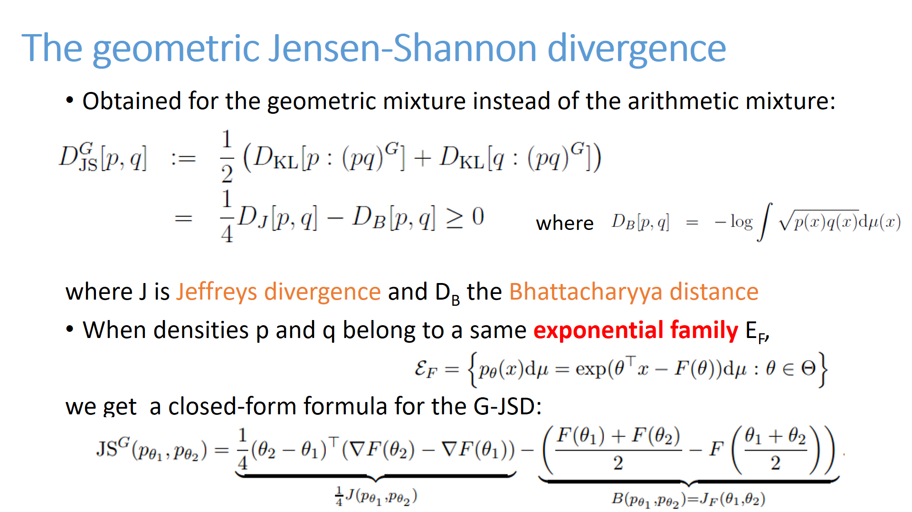
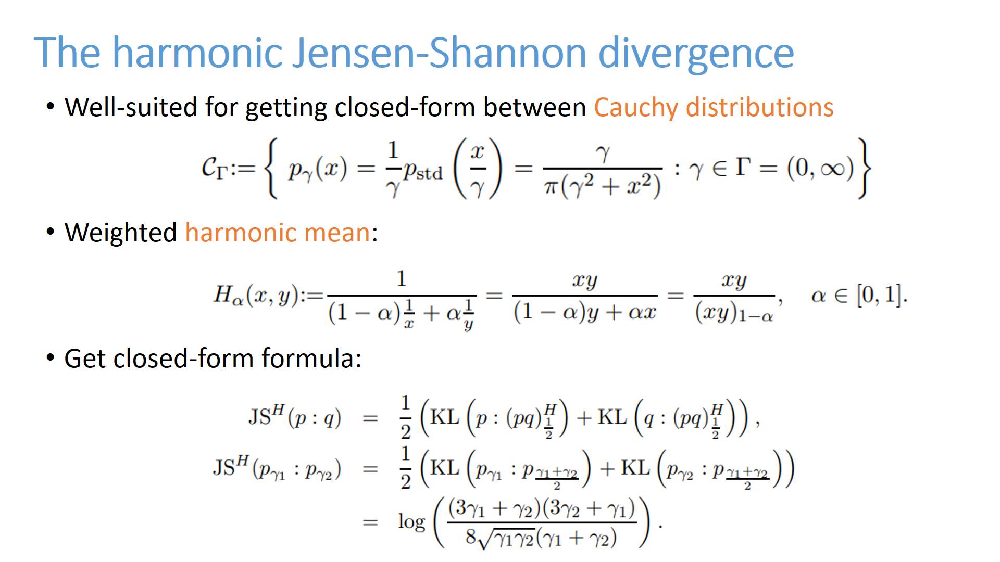

Source code for the paper entitled:<BR>
<center>
<b>On the Jensen-Shannon symmetrization of distances relying on abstract means
</b>
</center>

<ul>
<li><A HREF="https://www.mdpi.com/1099-4300/22/2/221" target=_blank>Entropy 2020, 22(2), 221</A>
; MDPI Entropy journal:https://doi.org/10.3390/e22020221
<li><A HREF="https://arxiv.org/abs/1904.04017" target=_blank>arXiv:1904.04017</A>
<li><A HREF="Slides-GeneralizationJensenShannonDivergence.pdf" target=_blank>Slides</A> (PowerPoint) and
<A HREF="Slide-JSSymmetrization.pdf" target=_blank>Slides</A> (Beamer).
</ul>
<HR>
Code:<BR>
<ul>

<li>Download the file <A HREF="GeometricJensenShannon.java" target=_blank>GeometricJensenShannon.java</A>

<li>You need to <A HREF="https://math.nist.gov/javanumerics/jama/" target=_blank>download</A> 
and install JAMA jar in the same directory of GeometricJensenShannon.java

<li>Compile and run the java file!
</ul>

<hr>
&nbsp;

<hr>
(C) 2019 Frank Nielsen<BR>
Last updated 2022